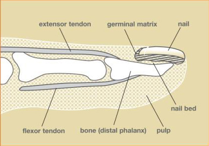

Condition
Fingertip Injuries
Crush injuries, cuts, and partial amputations of the end of the finger, the most commonly injured part of the hand.

Illustration © American Society for Surgery of the Hand
What is a fingertip injury?
The fingertip is the most common part of the hand to get hurt. A fingertip injury can involve the skin and pulp, the nail and nail bed, the bone at the end of the finger, or the tendons that attach nearby. Injuries range from a small crush under a door or a drawer to a cut from a knife to a partial amputation from a saw, a slammed door, or machinery. Because the fingertip has many nerve endings, even small injuries can be very painful and sensitive.
Common symptoms
- Pain, throbbing, and swelling at the end of the finger
- A cut, torn, or missing piece of skin or pulp
- Blood under the nail (subungual hematoma) or a torn nail
- A finger that looks shorter or has exposed bone
- Numbness, tingling, or extreme sensitivity to cold and touch
Why does it happen?
Fingertip injuries usually come from everyday activities and accidents:
- Crush injuries from car doors, house doors, drawers, or heavy objects
- Sharp cuts from knives, glass, or tools
- Power tools and machinery, including saws and lawn equipment
- Sports injuries, especially from balls hitting the fingertip
The treatment depends on which tissues are injured (skin, nail, bone, or tendon), how much tissue is missing, and the angle of the injury.
Treatment options
Non-surgical treatment
- Wound care and dressing changes. Small fingertip wounds with intact skin or with only a small amount of missing tissue often heal very well with a protective dressing that is changed every few days. The body can regenerate a remarkable amount of fingertip skin on its own.
- Drainage of blood under the nail. A painful collection of blood under the nail is often relieved with a small hole placed through the nail in the office. This takes seconds and gives immediate relief.
- Splinting. If there is a small fracture of the bone at the tip, a splint supports the finger while it heals, usually for about 3 weeks.
Surgical treatment
- Wound repair. Larger lacerations may need sutures. If the nail bed is cut, it is repaired under local numbing to help the new nail grow in smooth.
- Skin coverage. If a large area of skin or pulp is missing, a small flap of nearby skin can be rotated in to cover the wound and keep the fingertip sensitive.
- Bone and tendon repair. If the bone is broken in multiple pieces or a tendon is pulled off with a bone fragment, a small pin or a repair stitch may be needed.
- Completion amputation. Occasionally the most reliable result is a very short revision of the tip to leave a well-padded, comfortable finger. This sounds drastic but often gives the best long-term function.
What to expect at your visit
Dr. Barrera will carefully examine the fingertip, test the nerves and blood supply, and look at how the nail and nail bed are involved. X-rays are usually taken to check for a broken bone at the tip. Together you will decide on the simplest treatment that will give a durable, sensitive fingertip. Many fingertip injuries do extremely well with good wound care and time.
Call us if the finger is cold or pale, if a piece of the finger is missing, if there is a lot of blood under the nail causing throbbing pain, if the wound will not stop bleeding, or if the wound becomes red, draining, or very painful in the days after the injury.
Related
Questions?
Call your office location for non-urgent questions:
- NYU Langone Laurelton · 646-501-4950
- NYU Orthopedic, Woodside · 929-429-3222
- NYU Orthopedic, Richmond Hill · 718-206-6923
- Jamaica Hospital Ambulatory Care Center (ACC) · 718-301-0720
See our office contact information for addresses and fax numbers.